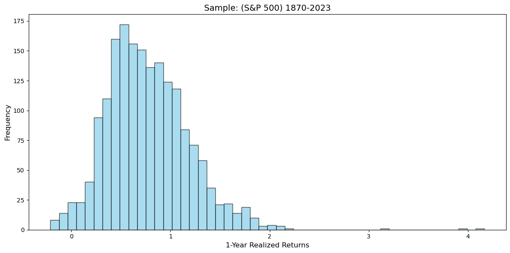
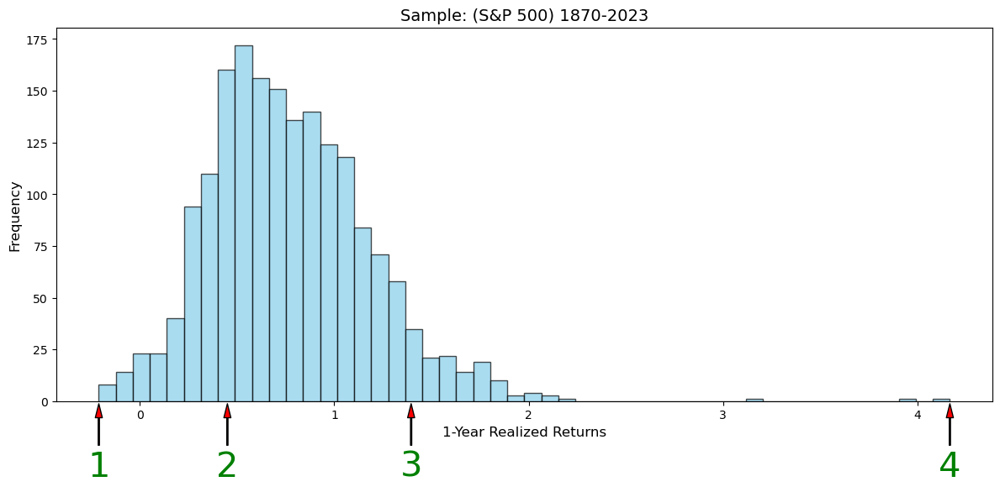
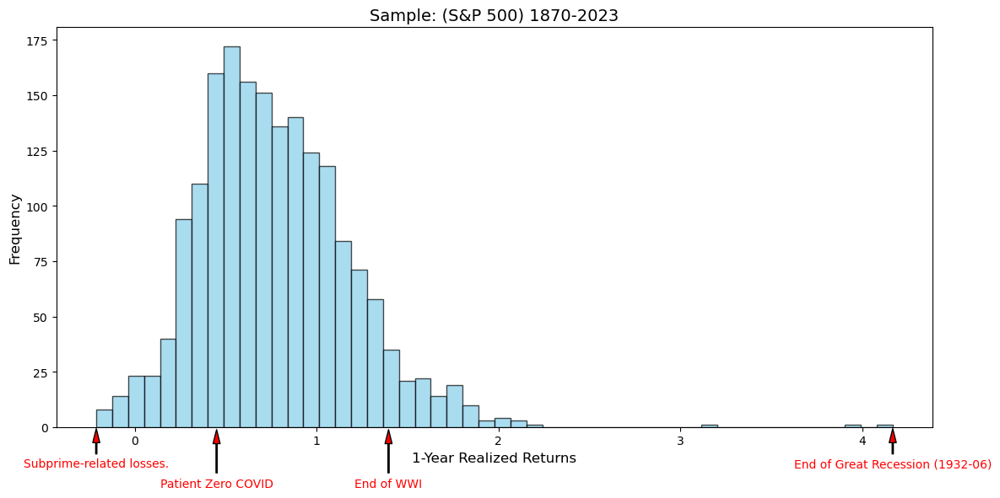
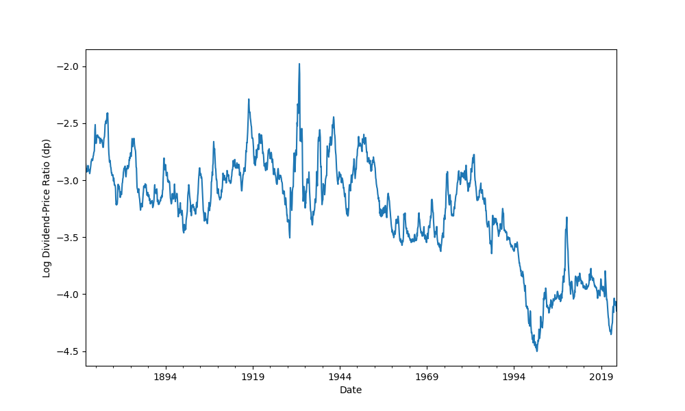
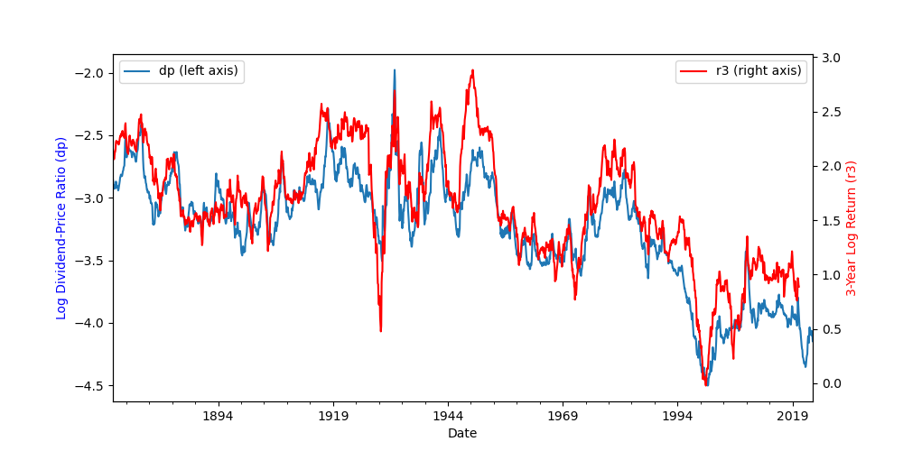
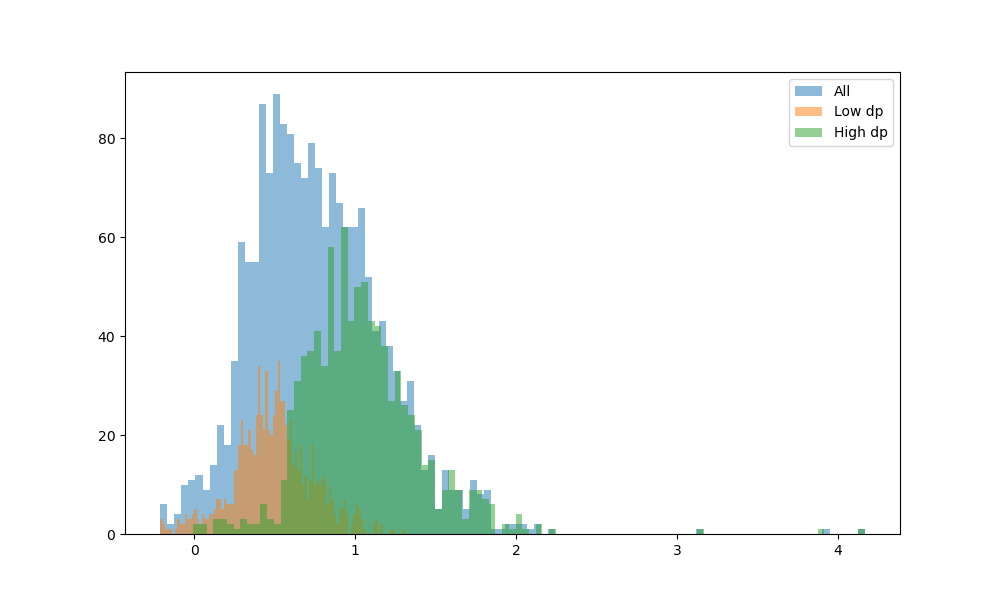
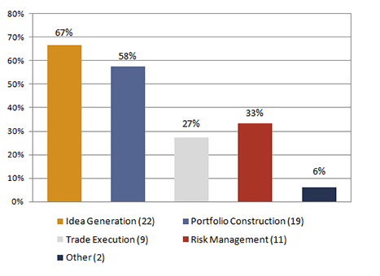
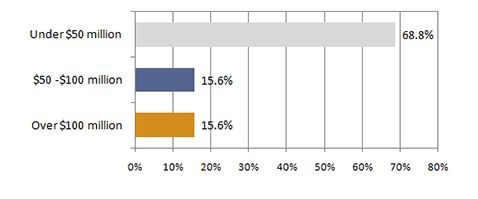

Juan F. Imbet · archived course notes
Return Predictability: Lessons and Insights for Future Hedge Fund Managers
Crash Course - UASM
August 2025
Juan F. Imbet
Motivation
If you pick a month at random between 1870 and 2025, how does the compound realized return of the SP500 one year ahead look like?


Guessing the events
- End of Great Recession (1932-06)
- Patient Zero COVID (2019-12)
- Banks Recognise Subprime-related losses (2007-12)
- End of WW1 (1918-11)

Business Cycles
What do periods of low/high expected returns have in common?
- Assets seem to be cheap when expected returns are high.
- Assets seem to be expensive when expected returns are low.
- A ratio of how much an asset is paying (e.g. dividends) vs its price is a good indicator of where in the business cycle we are.
- This applies to all assets, not just stocks, e.g. how much rent you can get from a house vs its price.
D/P variation over time

D/P and 3-year ahead returns

How does the D/P capture return variation?

Market Efficiency: Overview and Evidence
- Animal Spirits (Keynes, 1936): Prices are driven by irrational behavior and sentiment.
- Efficient Market Hypothesis (Fama 1970, Malkiel 1973): Prices in Financial Markets reflect all available information, and returns are unpredictable.
- Behavioral Finance (Shiller, 1981): Prices are driven by irrational behavior and sentiment.
- Debate between how should markets behave (normative) vs how do markets behave (positive).
Modern Approach
-
Efficient Inefficiently (Pedersen, 2019): The idea that markets are efficient enough to reflect relevant information into prices but inefficient enough to incentivize market participants to gather information and trade.
-
Markets do react to new information, but the reaction is not always immediate nor rational.
- If markets were not efficient enough then it would be easy to make money.
- It markets were not inefficient, how do we justify hedge fund fees structure of 2/20? 2% of assets and 20% of profits.
What do we mean for predictability?
-
Intuition: Can we find a variable that helps be right on average on the direction and magnitude of future returns?
-
Formal definition, conditional vs unconditional expectations. $$ \mathbb{E}[R_{t\rightarrow t+\tau}|X_t] \neq \mathbb{E}[R_{t\rightarrow t+\tau}] $$
How do we search for predictability?
- Data: Data collection vs Data Exhaustion. $\rightarrow$ Market Efficiency.
- Economic Theory: What variables should be relevant?
- Model: Linear vs Non-Linear $\rightarrow$ Economic Mechanisms vs Spurious Correlations.
- Backtesting: Implementation and Transaction Costs.
- Risk Management: How to manage the risk of a strategy that is not always profitable?
Time-Series and Cross-sectional Predictability
- Time-Series: Can you time the market? Can you time an industry? Can you buy low and sell high?
- Cross-sectional: Can you pick the best stocks? Can you pick the best industries? Why do some stocks outperform others?
Why is it predictability important for Hedge Funds?
- Mandate on generating returns regardless of market conditions.
- Flows are extremely sensitive to performance.
- Huge fees, deregulation, and access to financial technology and leverage means that the competition is fierce and expectations are high.
- Access to technology, traders, and real time information: timing the market.
- Access to a large universe of assets: cross-sectional predictability.
Simplest Tool, Linear Regression
Find Signal $X_t$ such that
$$ R_{t\rightarrow t+\tau} = a + \beta X_t + \epsilon_{t\rightarrow t+\tau} $$
- $\hat{\beta} \neq 0$: Predictability, $\mathbb{E}[R_{t \rightarrow t+\tau}] = \hat{a}+\hat{\beta} X_t$
- But what if its just luck? $\rightarrow$ Significance Testing.
- Look at standard errors.
Out-of-Sample Predictability / Backtesting.
- Even if $\hat{\beta} \neq 0$, it does not mean that we can make money.
- Out-of-Sample: Test the strategy on a different sample.
- It normally requires a rolling estimation of the model.
Long-term Experiment
Consider two timing strategies on the SP500, no leverage constraints.
- Buy/short the market if the rolling expected return over the next 3 years is positive/negative.
- Buy/short the market if the rolling expected return predicted by the log dividend price ratio is positive/negative.
- Rule of Thumb of Sharpe Ratios of 3.
Entire Sample: 1871-2023
| Strategy | Average Return | Annual Volatility | Approx. Sharpe Ratio | Overall |
|---|---|---|---|---|
| Benchmark | 0.45 | 0.17 | 2.63 | :warning: |
| Linear Model | 0.54 | 0.15 | 3.67 | :white_check_mark: |
Post-war Sample: 1946-2023
| Strategy | Average Return | Annual Volatility | Approx. Sharpe Ratio | Overall |
|---|---|---|---|---|
| Benchmark | 0.26 | 0.17 | 1.56 | :rotating_light: |
| Linear Model | 0.42 | 0.13 | 3.28 | :white_check_mark: |
1970-2023
| Strategy | Average Return | Annual Volatility | Approx. Sharpe Ratio | Overall |
|---|---|---|---|---|
| Benchmark | 0.22 | 0.16 | 1.35 | :rotating_light: |
| Linear Model | 0.39 | 0.13 | 2.93 | :white_check_mark: |
1990-2023
| Strategy | Average Return | Annual Volatility | Approx. Sharpe Ratio | Overall |
|---|---|---|---|---|
| Benchmark | 0.06 | 0.16 | 0.38 | :rotating_light: |
| Linear Model | 0.26 | 0.14 | 1.95 | :warning: |
Predictability works better across shorter samples
- Expected returns over longer samples capture macroeconomic trends, risk premia, consumption growth, productivity growth, etc.
- Regardless of the source of predictability (risk vs mispricing), its profits tend to diminish over time.
- This is due to the statistical behavior of what we are trying to predict.
- My favorite analogy: General Relativity vs Quantum Mechanics, over long distances/extended periods of time you just follow the laws of physics, but at the micro-level, things get weird.
More complex relationships
-
Non-linearities: Many signals, that are not linearly related to returns. $$ R_{t\rightarrow t+\tau} = f(X_{1t},X_{2t},\ldots,X_{kt}) + \epsilon_{t\rightarrow t+\tau} $$
-
Machine Learning: Can we use more complex models to predict returns?
- Pros: Strategies can be more profitable as it can capture more complex relationships.
- Cons: Overfitting, Black-box, and lack of economic intuition.
- Alternative Data:
- Satellite images,
- Social Media,
- Credit Card Transactions,
- Walking patterns
Does ML work?
It does if you are careful.
- Evidence across equity markets exploiting publicly available data, it is not about gathering additional data but learning from it (Kelly et al. 2020).
- Retail Investors could benefit from ML: Publicly available data and ML can help select Mutual Funds with positive alpha (DeMiguel et al. 2023).
- Allows for in-house development of strategies that are not available to the general public.
Artificial Intelligence and Natural Language Processing
- So far we have assumed $X_t$ is a number.
- 2023 Q4 Apple Inc's 10-K report contains only 6.91% of numerical characters.
- Natural Language Processing: Can we extract information from text?
- Companies' reports,
- Central Bank Statements,
- News Articles,
- Earnings Calls.
- Social Media.
Why Text Matters in Investing
- Much of the information in finance is conveyed through words, not just numbers.
- Words can reveal emotions, intentions, and subtle cues that quantitative data misses.
- Intuition: Like reading between the lines in a business meeting.
Sentiment Analysis Basics
- Sentiment: The emotional tone behind words – positive, negative, or neutral.
- Algorithms analyze text to score sentiment, similar to how humans judge a conversation.
- Business intuition: A positive tone in a CEO's speech might predict better company performance.
Text-Based Signals in Practice
- Earnings Calls: The tone of executives can predict stock price movements.
- News Articles: Negative coverage often leads to immediate market drops.
- Social Media: Public sentiment on platforms like Twitter influences retail trading.
Challenges with Text Data
- Text can be ambiguous: sarcasm, irony, or context-dependent meanings.
- Not all information is useful; some is just noise.
- Over-relying on text without combining with numbers can lead to poor decisions.
Integrating Text into Investment Strategies
- Combine text signals with traditional financial metrics for better predictions.
- Hedge funds use NLP to gain an edge in timing trades or selecting stocks.
- Intuition: It's like having a translator for the "human" side of markets.
AI Adoption
A BarclayHedge survey of 55 hedge fund/CTA professionals
- Q1: Do you utilize a machine learning (artificial intelligence) approach in your investment processes?
AI Adoption
- Q2: Which part of your investment process is driven by an application of machine learning techniques?

AI Adoption
- Q5: What are your approximate total strategy assets that utilize machine learning/artificial intelligence (funds and managed accounts)?

Conclusions
- Return predictability exists and varies systematically with business cycles and market conditions
- Modern hedge funds increasingly leverage AI, NLP, and alternative data sources to gain competitive advantages
- Success requires combining traditional financial metrics with innovative approaches and rigorous risk management
Questions?
Thank you for your attention!